第02讲 一元一次方程的解法
第02讲 一元一次方程的解法

课程标准 | 学习目标 |
①掌握等式的性质 ②掌握一元一次方程的解法 | 1. 掌握等式的性质及其应用． 2. 掌握一元一次方程移项、去括号、去分母的方法． |

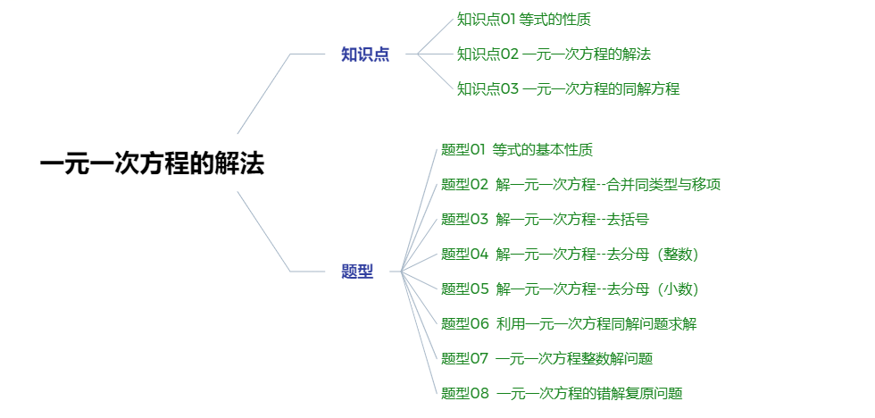
知识点01 等式的性质
性质1：等式两边加同一个数（或式子）结果仍得等式；
性质2：等式两边乘同一个数或除以一个不为零的数，结果仍得等式．
【即学即练1】
1．（23-24七年级上·湖南株洲·期末）下面利用等式性质对等式进行变形，错误的是（ ）
A．若 ，则
，则 B．
B． ，则
，则
C．若 ，则 D．若
，则 D．若 ，则
，则
【答案】B
【知识点】等式的性质
【分析】本题考查了等式的性质，能熟记等式的性质是解此题的关键，注意：①等式的两边都加（或减）同一个数或式子，等式仍成立；②等式的两边都乘以同一个数，等式仍成立，等式的两边都除以同一个不等于0的数，等式仍成立．根据等式的性质逐个判断即可．
【详解】解：A、若，则，正确，不符合题意；
B、，则，前提是 ，选项错误，符合题意；
，选项错误，符合题意；
C、若，则，正确，不符合题意；
D、若，则，正确，不符合题意；
故选：B．
2．（23-24七年级上·湖南娄底·期末）运用等式性质进行的变形，下列正确的是（ ）
A．如果 ，那么
，那么 B．如果
B．如果
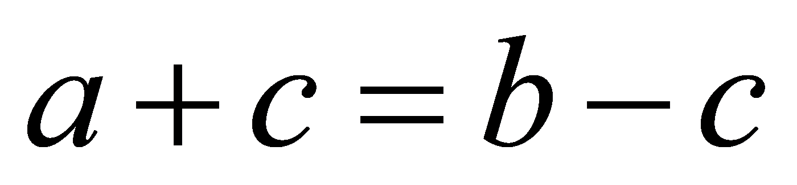
，那么C．如果，那么 D．如果
D．如果 ，那么
，那么
【答案】D
【知识点】等式的性质
【分析】根据等式的性质，等式的两边同时加上（或减去）同一个数（或字母），等式仍成立；等式的两边同时乘以（或除以）同一个不为0数（或字母），等式仍成立．本题主要考查了等式的基本性质，等式的两边同时加上（或减去）同一个数（或字母），等式仍成立；等式的两边同时乘以（或除以）同一个不为0数（或字母），等式仍成立．
【详解】解：A．若
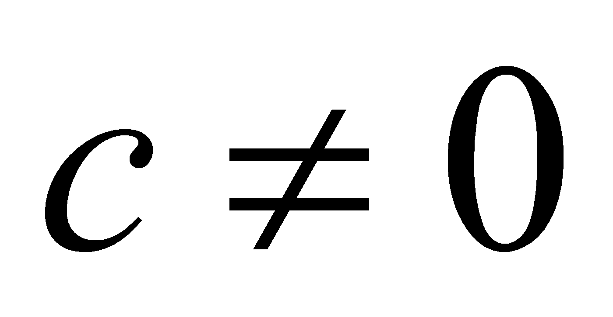
，则结论正确，故A错误，不符合题意；B．根据等式的基本性质：等式两边同减一个相等的式或数，等式仍然成立，故B错误，不符合题意；
C．若，则结论正确，故C错误，不符合题意；
D．如果，那么
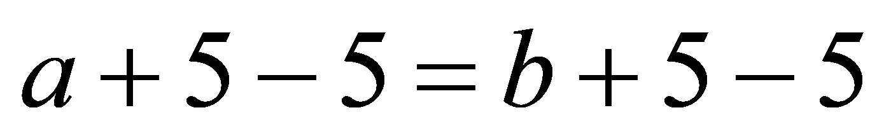
，即，故D正确，符合题意；故选：D．
知识点02 一元一次方程的解法
◆合并同类项 把若干能合并的式子的系数相加，字母和字母的指数不变，起到化简的作用.
◆移项 把等式一边的某项变号后移到另一边，叫做移项.
◆去括号 括号前负号时，去掉括号时里面各项应变号.
◆去分母 在方程的两边都乘以各自分母的最小公倍数。去分母时不要漏乘不含分母的项。当分母中含有小数时，先将小数化成整数.
【注意】：（1）移项的时候注意变号；
（2）去括号的适合注意，若括号前是“-”号，那么去括号的时候要变号.
【即学即练2】
1．（23-24七年级上·黑龙江哈尔滨·期中）解方程
(1)
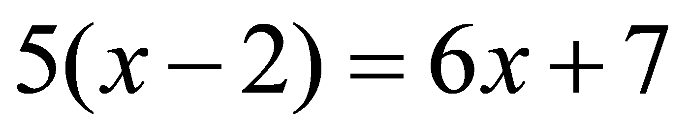
；(2)
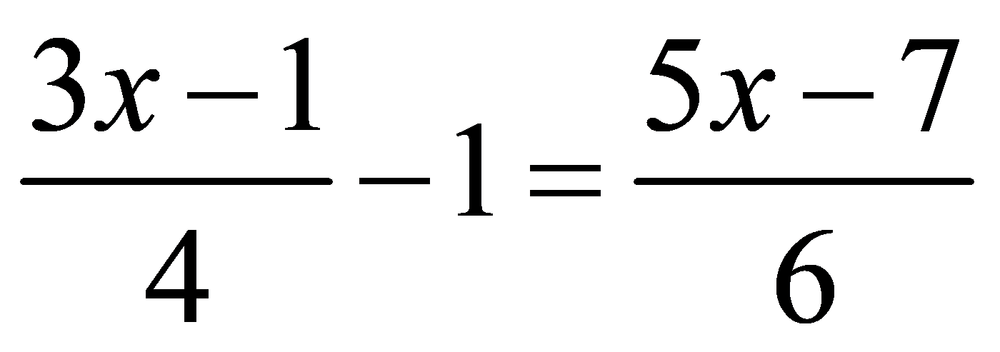
；【答案】(1)
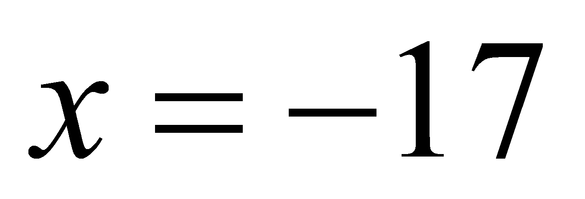
(2)x=−1
【知识点】解一元一次方程（二）——去括号、解一元一次方程（三）——去分母
【分析】本题考查了解一元一次方程，熟悉解一元一次方程的步骤是关键，注意各步不要出错；
（1）去括号，移项，合并同类项，系数化为1即可；
（2）去分母，方程两边同乘12，化为系数是整数的方程，再去括号，移项，合并同类项，系数化为1即可．
【详解】（1）解：去括号，得：
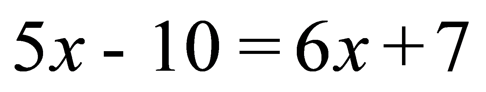
，移项、合并同类项，得：
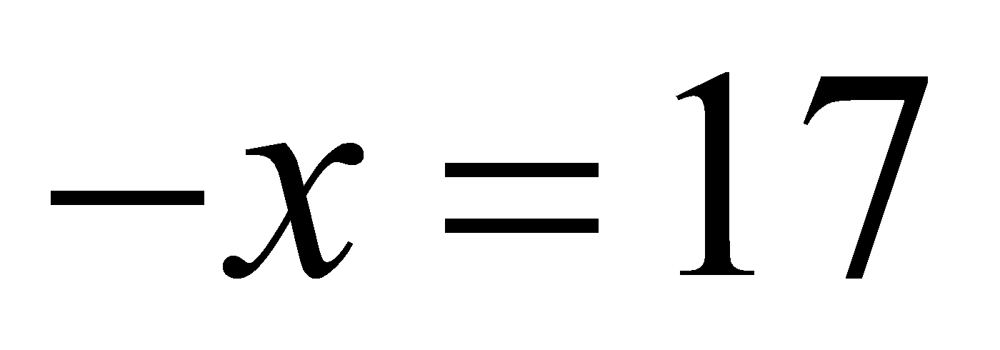
，系数化为1，得：；
（2）解：方程两边同乘12，得：
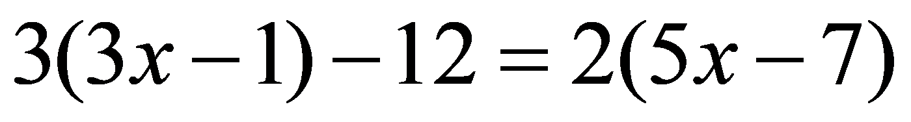
，去括号，得：
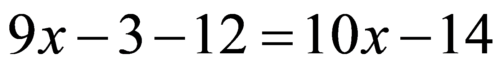
，移项、合并同类项，得：
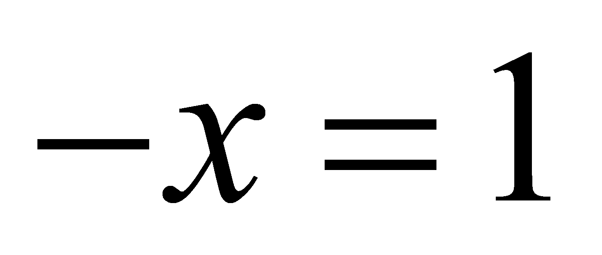
，系数化为1，得：x=−1．
2．（24-25七年级上·黑龙江哈尔滨·阶段练习）解方程：
(1)
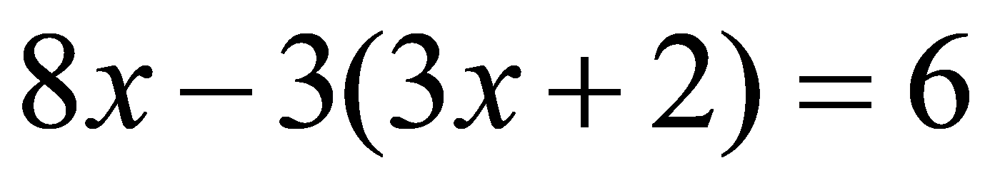
；(2)
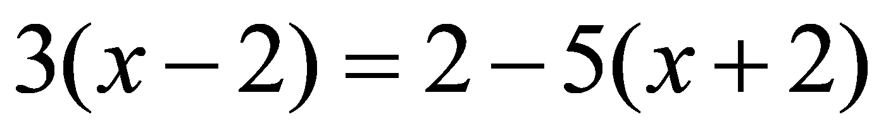
；(3) ；
；
(4) ．
．
【答案】(1) ；
；
(2) ；
；
(3)
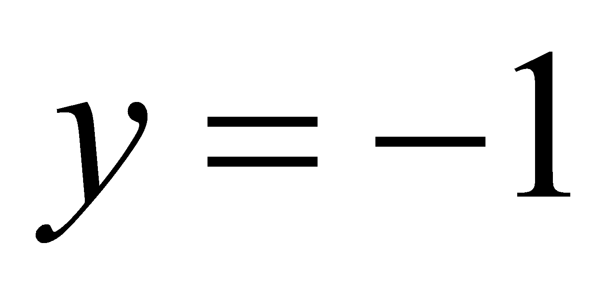
；(4) ．
．
【知识点】解一元一次方程（二）——去括号、解一元一次方程（三）——去分母
【分析】本题考查了解一元一次方程，正确掌握相关性质内容是解题的关键．
（1）先去括号，再移项，然后去括号，合并同类项，最后系数化1，据此即可作答．
（2）先去括号，再移项，然后去括号，合并同类项，最后系数化1，据此即可作答．
（3）先去分母，再括号，再移项，然后去括号，合并同类项，最后系数化1，据此即可作答．
（4）先去分母，再括号，再移项，然后去括号，合并同类项，最后系数化1，据此即可作答．
【详解】（1）解：，
去括号，
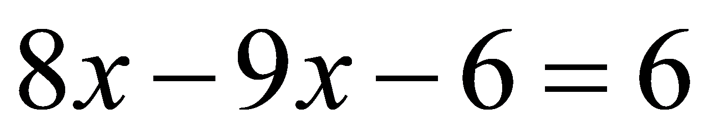
，移项，
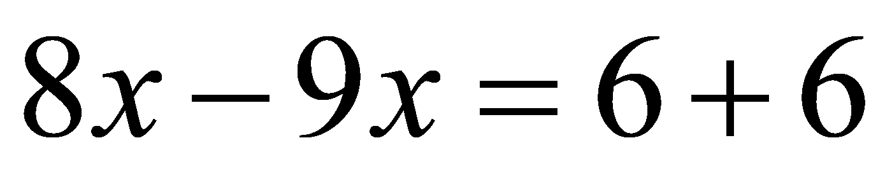
，合并同类项，
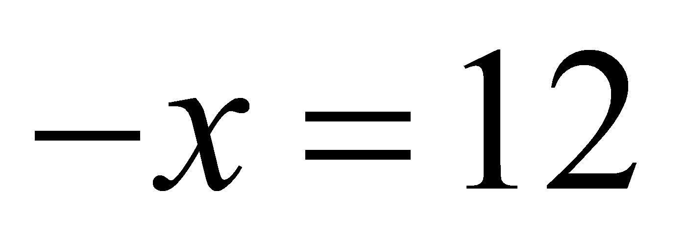
，系数化1，；
（2）解：，
去括号，
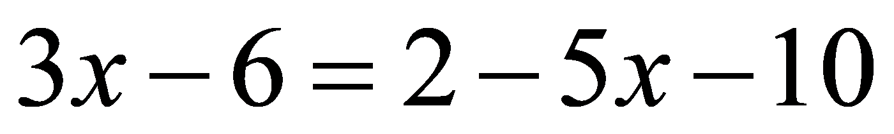
，移项，
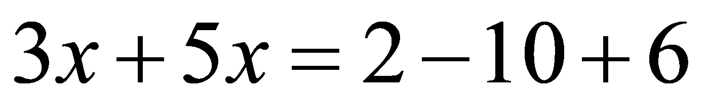
，合并同类项， ，
，
系数化1，；
（3）解：，
去分母，
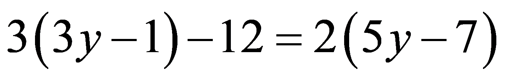
，去括号，
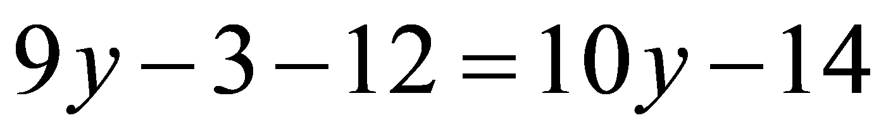
，移项，
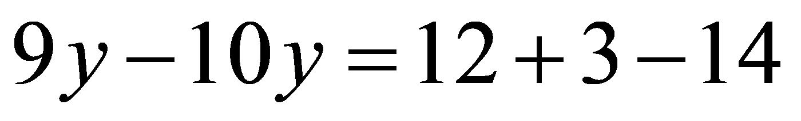
，合并同类项，
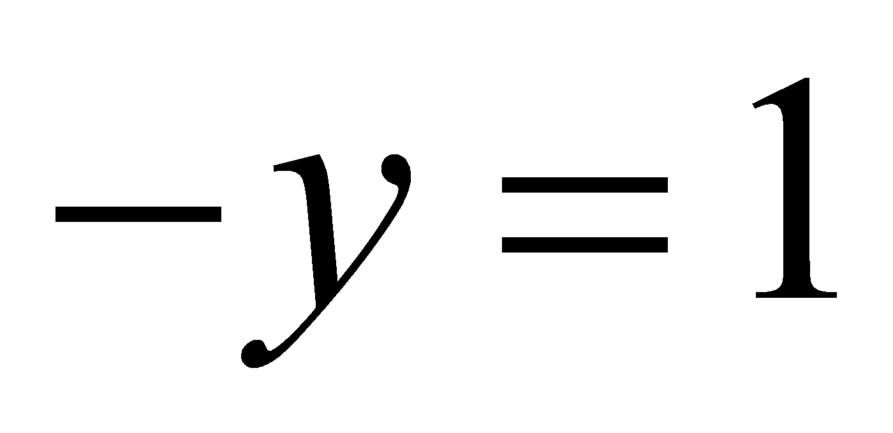
，系数化1，；
（4）解：，
去分母，
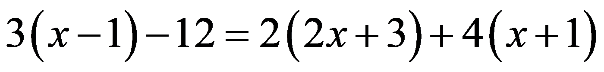
，去括号，
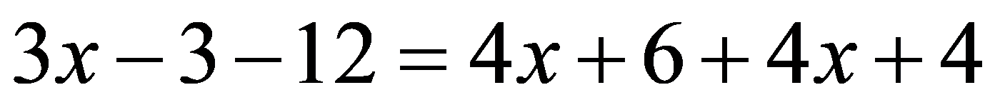
，移项，
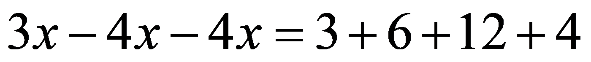
，合并同类项，
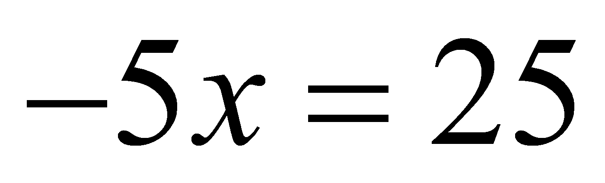
，系数化1，．
知识点03 一元一次方程的同解方程
如果两个方程的解相同，那么这两个方程叫做同解方程，解决此类问题，通常是解其中一个方程，得到该方程解代入另一个方程求解字母的值.
【即学即练3】
1．（23-24七年级上·山东青岛·期末）若关于 的方程
的方程 和方程
和方程 同解，则
同解，则 的值等于 ．
的值等于 ．
【答案】
【知识点】解一元一次方程（一）——合并同类项与移项、方程的解
【分析】本题考查了一元一次方程的解以及解一元一次方程，先根据题意，得 ，再把代入，即可求出的值作答．
，再把代入，即可求出的值作答．
【详解】解：∵关于的方程和方程同解，
∴由解得
则把代入，
得
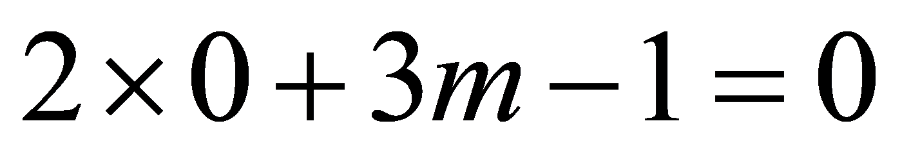
解得
故答案为：
2．（23-24七年级下·吉林·开学考试）若方程 与
与 的解相同，则
的解相同，则 的值是 ．
的值是 ．
【答案】1
【知识点】解一元一次方程（一）——合并同类项与移项、方程的解
【分析】本题考查同解方程，先求出的解，然后将解代入，进行求解即可．
【详解】解：，
∴ ，
，
把代入，得：
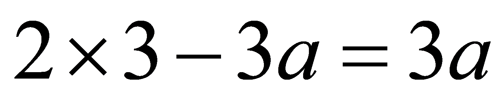
，解得： ；
；故答案为：1．

题型01 等式的基本性质
【典例1】（24-25七年级上·黑龙江哈尔滨·阶段练习）运用等式性质进行的变形，正确的是（ ）
A．若 ，则 B．若，则
，则 B．若，则
C．若 ，则
，则 D．若
D．若 ，则
，则
【答案】B
【知识点】等式的性质
【分析】本题考查了等式的性质，性质1：等式两边同时加（或减）同一个数（或式子），结果仍相等；性质2：等式两边同时乘同一个数，或除以同一个不为0的数，结果仍相等，根据对应性质逐一判断，即可得到答案．
【详解】解：A、若，当 时，
时， ，原变形错误，不符合题意；
，原变形错误，不符合题意；
B、若，则，原变形正确，符合题意；
C、若，则 ，原变形错误，不符合题意；
，原变形错误，不符合题意；
D、若，则 ，原变形错误，不符合题意；
，原变形错误，不符合题意；
故选：B．
【变式1】（24-25七年级上·全国·课后作业）已知等式，下列变形不正确的是（ ）
A． B．
B． C．
C． D．
D．
【答案】D
【知识点】等式的性质
【分析】本题考查了等式的性质．熟练掌握等式的性质是解题的关键．
根据等式的性质对各选项判断作答即可．
【详解】解：∵，
∴，，，
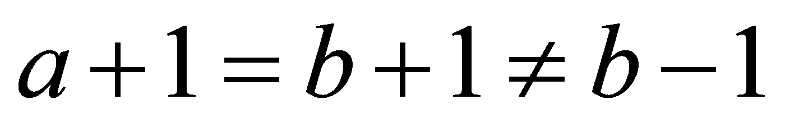
，∴A、B、C正确，故不符合要求；D错误，故符合要求；
故选：D．
【变式2】（24-25七年级上·全国·课后作业）下列等式变形正确的是（ ）
A．如果 ，那么
，那么
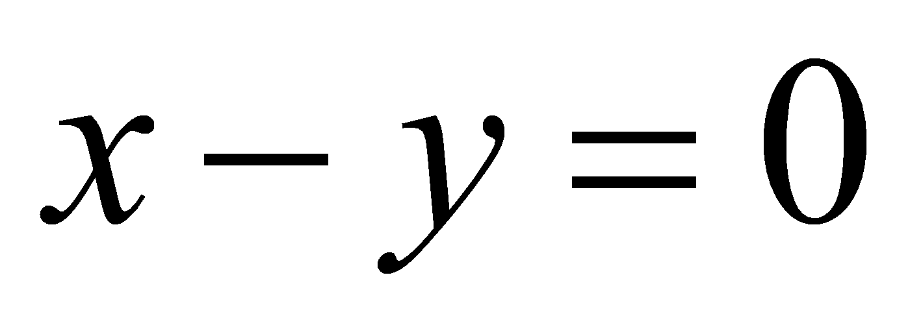
B．如果 ，那么
，那么
C．如果
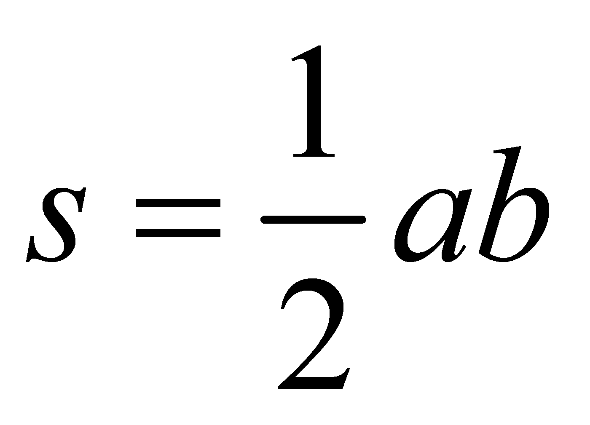
，那么 D．如果
D．如果 ，那么
，那么【答案】A
【知识点】等式的性质
【分析】本题主要考查了等式的基本性质，熟练掌握等式的基本性质是解题的关键．
根据等式的基本性质，逐项判断，即得．
【详解】解：A、，
等号两边都减y加3，
得，
故本选项正确，
符合题意；
B、，
当 时，，
时，，
故本选项错误，
不符合题意；
C、，
当
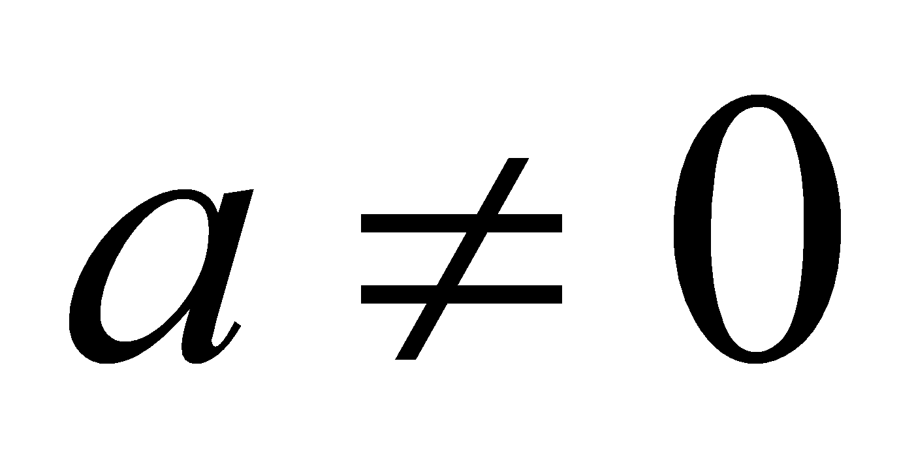
时，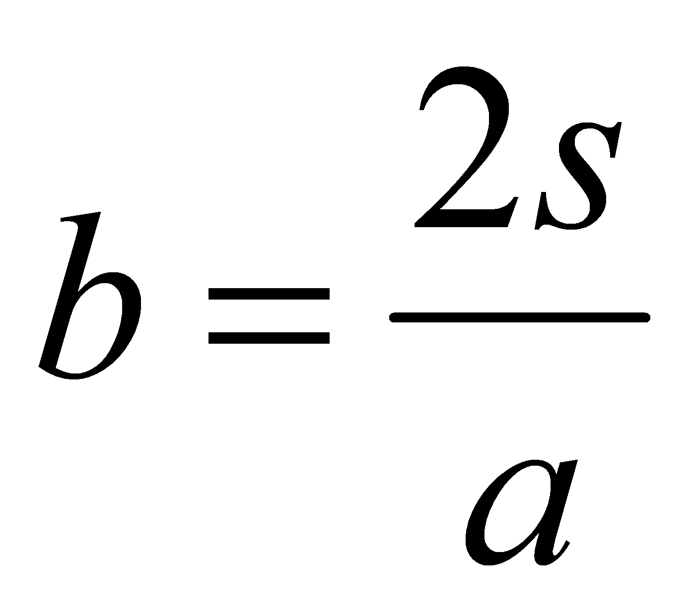
，故本选项错误，
不符合题意；
D、，
两边都乘以2，
得 ，
，
故本选项错误，
不符合题意．
故选：A．
【变式3】（23-24七年级上·天津·期中）下列说法错误的是（ ）
A．若 ，则 B．若
，则 B．若 ，则
，则
C．若，则 D．若
D．若 ，则
，则
【答案】B
【知识点】等式的性质
【分析】本题考查了等式的基本性质，根据等式的基本性质逐项判断即可求解，掌握等式的基本性质是解题的关键．
【详解】解： 、∵，根据等式的基本性质：“等式两边同时除以同一个不为
、∵，根据等式的基本性质：“等式两边同时除以同一个不为 的数，两边仍然相等”可得，
的数，两边仍然相等”可得，
∴正确，不符合题意；
 、∵，当
、∵，当
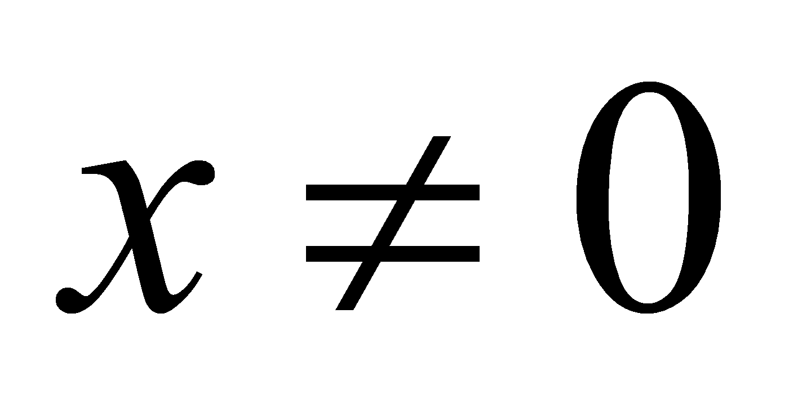
时，根据等式的基本性质：“等式两边同时除以同一个不为的数，两边仍然相等”，可得；当x=0时， ，可得x=0，
，可得x=0，∴x=0或 ，
，
∴错误，符合题意；
 、∵，根据等式的基本性质：“等式两边减去同一个数，两边仍然相等”，可得，
、∵，根据等式的基本性质：“等式两边减去同一个数，两边仍然相等”，可得，
∴正确，不符合题意；
 、∵，根据等式的基本性质：“等式两边乘以同一个数，两边仍然相等”，可得，
、∵，根据等式的基本性质：“等式两边乘以同一个数，两边仍然相等”，可得，
∴正确，不符合题意；
故选：．
题型02 解一元一次方程--合并同类型与移项
【典例2】（23-24七年级上·江西宜春·期中）解方程：
(1) ；
；
(2) ．
．
【答案】(1)
(2)
【知识点】解一元一次方程（一）——合并同类项与移项
【分析】本题考查解一元一次方程的解法；解一元一次方程常见的过程有去括号、移项、系数化为1等．
（1）先移项、合并同类项，然后化未知数的系数为1；
（2）先去移项、合并同类项；最后化未知数的系数为1．
【详解】（1）移项得
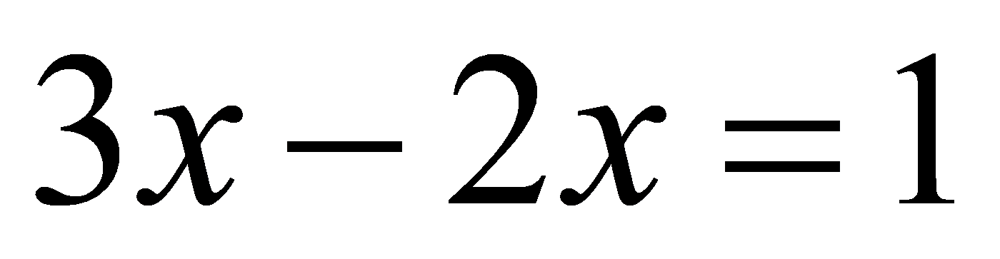
，合并同类项得；
（2）移项得
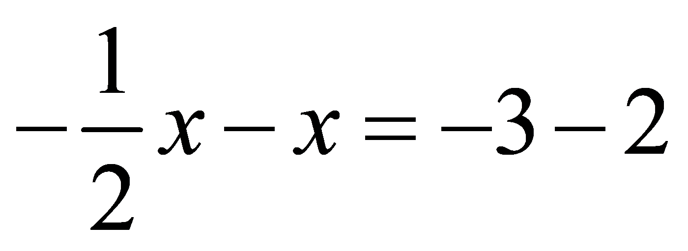
，合并同类项得 ，
，
系数化为1得．
【变式1】（24-25七年级上·四川凉山·期中）解下列方程：
(1)
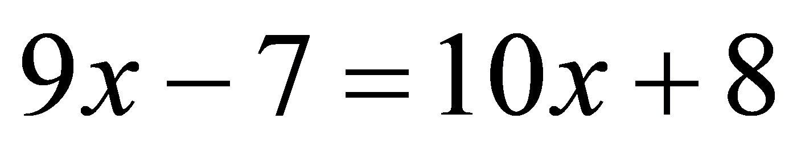
；(2) ．
．
【答案】(1)
(2)
【知识点】解一元一次方程（一）——合并同类项与移项
【分析】本题考查的是解一元一次方程，掌握一元一次方程的解法是解题概念．
（1）依次移项、合并同类项、系数化1，即可解方程；
（2）依次移项、合并同类项、系数化1，即可解方程．
【详解】（1）解：，
移项得： ，
，
合并同类项得：
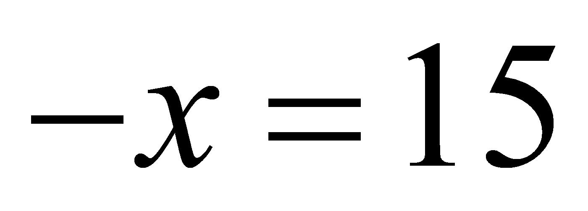
，系数化1得：；
（2）解：，
移项得：
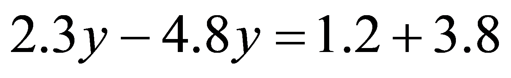
，合并同类项得： ，
，
系数化1得：．
【变式2】（24-25七年级上·全国·课后作业）解下列方程：
(1)
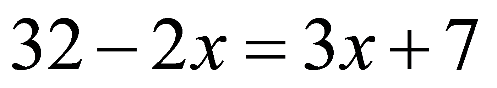
；(2) ；
；
(3) ；
；
(4) ．
．
【答案】(1)
(2)
(3)
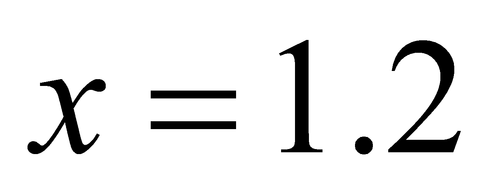
(4)
【知识点】解一元一次方程（一）——合并同类项与移项
【分析】本题考查了解一元一次方程，熟练掌握一元一次方程的解法是解题的关键．
（1）根据移项、合并同类项、未知数的系数化为 的步骤求解即可；
的步骤求解即可；
（2）根据移项、合并同类项、未知数的系数化为的步骤求解即可；
（3）根据移项、合并同类项、未知数的系数化为的步骤求解即可；
（4）根据移项、合并同类项、未知数的系数化为的步骤求解即可．
【详解】（1）解：
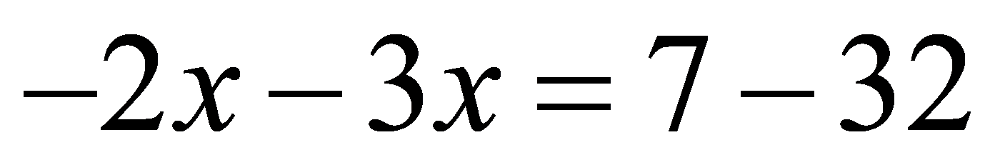

（2）解：
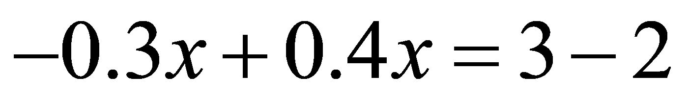
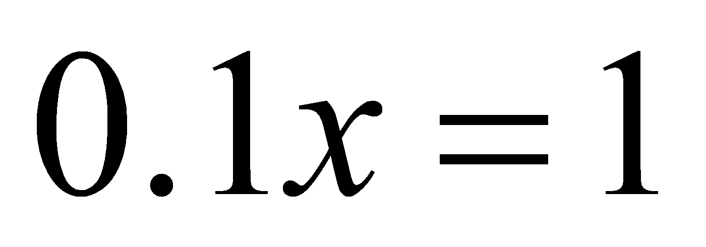
（3）解：
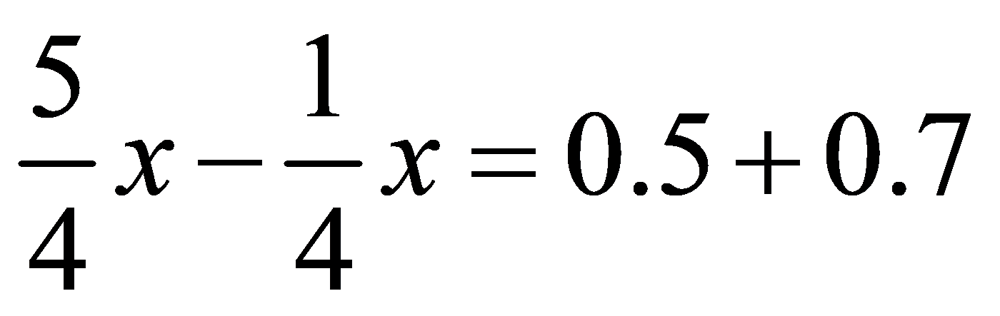
（4）解：
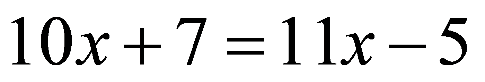


【变式3】（24-25七年级上·全国·课后作业）解下列方程：
(1) ；
；
(2) ；
；
(3) ；
；
(4) ．
．
【答案】(1)
(2)
(3)
(4)
【知识点】解一元一次方程（三）——去分母、解一元一次方程（一）——合并同类项与移项
【分析】本题考查了解一元一次方程，正确掌握相关性质内容是解题的关键．
（1）（2）（3）先移项，合并同类项，再系数化1，据此即可作答．
（4）先去分母，移项，合并同类项，据此即可作答．
【详解】（1）解：，
移项，得
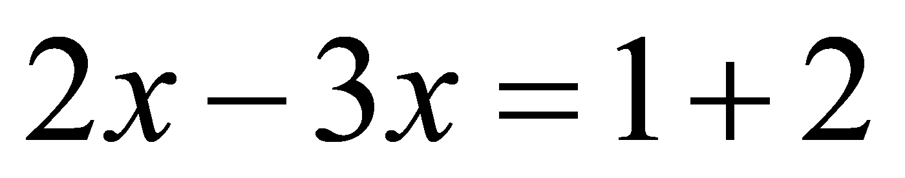
，合并同类项，得 ，
，
系数化1，得；
（2）解：
移项，得
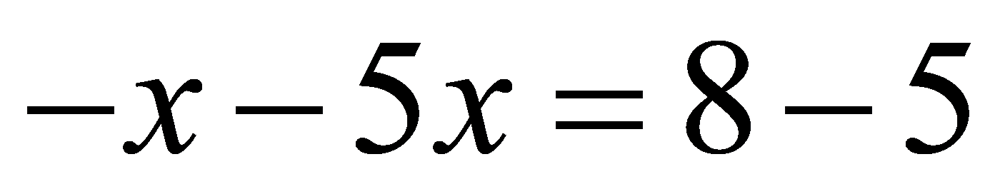
，合并同类项，得 ，
，
系数化1，得；
（3）解：
移项，得，
合并同类项，得，
系数化1，得；
（4）解：
去分母，得
移项，得 ，
，
合并同类项，得 ，
，
题型03 解一元一次方程--去括号
【典例3】（2024七年级上·全国·专题练习）解方程
(1) ；
；
(2) ；
；
(3)
【答案】(1) ；
；
(2)；
(3)
【知识点】解一元一次方程（二）——去括号
【分析】本题主要考查解一元一次方程，熟练掌握解一元一次方程的步骤是解题的关键；
（1）根据去括号，合并同类项与移项，化系数为1计算即可．
（2）根据去括号，合并同类项与移项，化系数为1计算即可．
（3）根据去括号，合并同类项与移项，化系数为1计算即可．
【详解】（1）解：，
 ，
，
，
；
（2）解：，
，
，
 ，
，
；
（3）解：，
去括号得：，
移项得：，
合并得：，
化系数为1得：．
【变式1】（24-25七年级上·全国·课后作业）解下列方程：
(1)
(2)
(3)
(4)
【答案】(1)
(2)
(3)
(4)
【知识点】解一元一次方程（一）——合并同类项与移项、解一元一次方程（二）——去括号
【分析】本题考查了解一元一次方程，解一元一次方程的步骤：去括号，移项，合并同类项，未知数的系数化为1，根据步骤求解各题即可．
【详解】（1）解：

；
（2）解：

；
（3）解：


；
（4）解：


．
【变式2】（24-25七年级上·全国·课后作业）解下列方程：
(1)
(2)
(3)
(4)
【答案】(1)
(2)
(3)
(4)
【知识点】解一元一次方程（二）——去括号
【分析】此题考查了解一元一次方程，熟练掌握解一元一次方程的基本步骤及注意事项是解题的关键．
（1）按照去括号、移项、合并同类项、系数化1的步骤解方程即可；
（2）按照去括号、移项、合并同类项、系数化1的步骤解方程即可；
（3）按照去括号、移项、合并同类项、系数化1的步骤解方程即可；
（4）按照去括号、移项、合并同类项、系数化1的步骤解方程即可．
【详解】（1）
去括号得，
移项合并同类项得，
系数化为1得，
（2）
去括号得，
移项合并同类项得，
系数化为1得，
（3）
去括号得，
移项合并同类项得，
系数化为1得，
（4）
去括号得，
移项合并同类项得，
系数化为1得，
【变式3】（24-25七年级上·全国·单元测试）解方程：
(1)
(2)
(3)
【答案】(1)
(2)
(3)
【知识点】解一元一次方程（二）——去括号、解一元一次方程（三）——去分母
【分析】本题考查了解一元一次方程；
（1）去括号，移项，合并同类项，把x系数化为1，即可求解；
（2）去括号，移项，合并同类项，把x系数化为1，即可求解；
（3）逐步去分母，去括号，移项，合并同类项，把x系数化为1，即可求解；
掌握解方程的步骤是解题的关键．
【详解】（1）解： ，
，
 ，
，
，
 ；
；
（2）解： ，
，
 ，
，
 ，
，
 ；
；
（3）解：，
，
 ，
，
 ，
，
 ，
，
 ，
，
 ，
，
．
题型04 解一元一次方程--去分母（整数）
【典例4】（23-24七年级上·四川遂宁·期末）解方程：
【答案】
【知识点】解一元一次方程（三）——去分母
【分析】本题考查了解一元一次方程，按照去分母、去括号、移项、合并同类项、系数化为1的步骤解一元一次方程，即可求解．
【详解】解：
去分母，
去括号，
移项，合并同类项，
化系数为1，．
【变式1】（23-24七年级上·福建泉州·阶段练习）解方程∶
【答案】
【知识点】解一元一次方程（三）——去分母
【分析】本题主要考查解一元一次方程，解题的关键是掌握解一元一次方程的基本步骤：去分母、去括号、移项、合并同类项、系数化为1．
方程去分母，去括号，移项合并，把x系数化为1，即可求出解；
【详解】解：
去分母得，
去括号得，
移项，合并同类项得，
系数化为1得，．
【变式2】（23-24七年级上·天津·期末）解方程：
(1) ； (2)
； (2) ．
．
【答案】(1)
(2)
【知识点】解一元一次方程（三）——去分母
【分析】本题主要考查了解一元一次方程，熟练掌握解一元一次方程的方法和步骤是解题关键．
（1）按照去分母，去括号，移项，合并同类项，系数化为1的步骤求解即可；
（2）按照去分母，去括号，移项，合并同类项，系数化为1的步骤求解即可．
【详解】（1）解：，
去分母，得 ，
去括号，得  ，
，
移项，得  ，
，
合并同类项，得  ，
，
系数化为1，得 ；
（2）解：，
去分母，得 ，
，
去括号，得，
移项，得 ，
，
合并同类项，得  ，
，
系数化为1，得 ．
【变式3】（23-24七年级下·重庆·开学考试）（1）解方程： ；
；
（2）解方程： ．
．
【答案】（1） ；（2）
；（2）
【知识点】解一元一次方程（三）——去分母
【分析】本题考查了解一元一次方程，掌握解一元一次方程的步骤是解题的关键．
（1）按照去分母、去括号、移项、合并同类项、系数化为1的步骤解一元一次方程即可求解；
（2）按照去分母、去括号、移项、合并同类项、系数化为1的步骤解一元一次方程即可求解．
【详解】解：（1），
去分母得，，
去括号得， ，
，
移项得， ，
，
合并同类项得，，
化系数为1得，；
（2），
去分母得，，
去括号得， ，
，
移项得， ，
，
合并同类项得， ，
，
化系数为1得，．
题型05 解一元一次方程--去分母（小数）
【典例5】（24-25七年级上·全国·单元测试）解方程：
【答案】
【知识点】解一元一次方程（三）——去分母
【分析】本题考查了解一元一次方程，熟练掌握解一元一次方程的一般步骤是解题的关键；去分母，去括号，移项、合并同类项即可解决．
【详解】解：，
原方程化为： ，
，
去分母，得： ，
，
去括号得： ，
，
移项，得：，
合并同类项，得：，
系数化为1，得．
【变式1】（2024七年级上·全国·专题练习）解方程： ．
．
【答案】
【知识点】解一元一次方程（三）——去分母
【分析】本题主要考查了解一元一次方程，去分母、去括号、移项、合并同类项、系数化为1，这仅是解一元一次方程的一般步骤，针对方程的特点，灵活应用，各种步骤都是为使方程逐渐向形式转化．先化整，然后根据去分母、去括号、移项、合并同类项、未知数的系数化为1的步骤求解即可．
【详解】解：，
方程整理得：，
去分母得：，
移项合并得：，
解得：．
【变式2】（2024七年级上·全国·专题练习）解方程： ；
；
【答案】
【知识点】解一元一次方程（三）——去分母
【分析】本题考查了解一元一次方程，解含绝对值的方程，熟练掌握解一元一次方程的一般步骤是解题的关键；去分母，去括号，移项、合并同类项即可；
【详解】解：，
整理得：，
去分母得：，
去括号得：，
∴，
解得：；
【变式3】（24-25七年级上·重庆·阶段练习）解方程
(1)
(2)
【答案】(1) ；
；
(2) ．
．
【知识点】解一元一次方程（三）——去分母
【分析】本题考查了解一元一次方程，比例的基本性质，掌握相关知识是解题的关键．
（1）根据比例的基本性质可得 ，即可求解；
，即可求解；
（2）先去分母，合并同类项，然后系数化为1即可．
【详解】（1）解：，
∴，
∴，
解得：；
（2）解：，
∴ ，
，
∴，
∴，
解得：．
题型06 利用一元一次方程同解问题求解
【典例6】（24-25七年级上·安徽合肥·期中）已知方程 与方程
与方程 的解相同，则
的解相同，则 的值为 ．
的值为 ．
【答案】
【知识点】方程的解、解一元一次方程（一）——合并同类项与移项
【分析】本题主要考查解一元一次方程，解决本题的关键是要熟练掌握解一元一次方程的解法．根据解一元一次方程的一般步骤，可得的解，把解代入方程，解方程可得答案．
【详解】解：
解得： ，
，
∵方程与方程的解相同，
∴把代入得：，
解得： ．
．
故答案为：
【变式1】（23-24六年级上·山东泰安·期末）若方程 与
与 的解相同，则a的值为 ．
的解相同，则a的值为 ．
【答案】8
【知识点】方程的解、解一元一次方程（三）——去分母
【分析】本题考查同解方程，先求出方程的解，将其代入中，求出a的值即可．
【详解】解：∵，
∴，
把代入，得：，
解得： ；
；
故答案为：8．
【变式2】（23-24七年级上·全国·单元测试）若关于 的方程
的方程 和
和 有相同的解，则
有相同的解，则 ．
．
【答案】 /
/
【知识点】方程的解、解一元一次方程（一）——合并同类项与移项
【分析】本题考查了方程的解的定义，已知条件中涉及到方程的解，把方程的解代入原方程，转化为关于字母系数的方程进行求解．可把它叫做“有解就代入”． 解方程，把方程的解代入即可得到一个关于m的方程，从而求得m的值．
【详解】解：解方程得：，
把代入方程得：，
解得：．
故答案为： ．
．
【变式3】（23-24七年级下·福建泉州·期中）若方程 的解与关于x的方程
的解与关于x的方程 的解相同，则a的值为 ．
的解相同，则a的值为 ．
【答案】
【知识点】解一元一次方程（三）——去分母
【分析】本题考查了方程的解和一元一次方程的解法，分别解出两方程的解，然后让它们的解相等，即可求得的值．掌握解一元一次方程是解答本题的关键．
【详解】解：，
去分母得 ，
，
去括号，
移项合并得 ，
，
解得得 ，
，
解，
移项合并得：，
解得 ，
，
由题意得：，
解得 ．
．
故答案为：．
题型07 一元一次方程整数解问题
【典例7】（23-24七年级上·江苏扬州·期末）若关于的方程 的解为正整数，整数的值是 ．
的解为正整数，整数的值是 ．
【答案】2或3或4或7
【知识点】解一元一次方程（二）——去括号
【分析】首先解方程表示出的值，然后根据解为正整数求解即可．本题主要考查方程的解和解一元一次方程，解题的关键是掌握解一元一次方程的基本步骤：去分母、去括号、移项、合并同类项、系数化为1．
【详解】解：，
移项得： ，
，
合并同类项得：，
系数化为1得：，
 关于的方程的解为正整数，
关于的方程的解为正整数，
 为正整数，
为正整数，
 或
或 或
或 或
或
 或
或 或或
或或 ．
．
故答案为：2或3或4或7
【变式1】（23-24七年级下·河南洛阳·期末）若关于的方程的解为正整数，则所有满足条件的整数的值为 ．
【答案】 ，0和1
，0和1
【知识点】方程的解、解一元一次方程（一）——合并同类项与移项
【分析】本题主要考查一元一次方程的解，熟练掌握运算法则是解题的关键．将原方程化为关于的一元一次方程，然后根据 ，即可得到答案．
，即可得到答案．
【详解】解：，
 ，
，
 ，
，
 ，
，
 要为
要为 的倍数，
的倍数，
 或
或 或
或 ．
．
故答案为：，0和1．
【变式2】（23-24七年级下·重庆·期中）关于的一元一次方程 的解为整数，则所有整数
的解为整数，则所有整数 的和为 ．
的和为 ．
【答案】
【知识点】解一元一次方程——拓展
【分析】此题考查了一元一次方程的解，方程去分母，去括号，移项合并，把的系数化为1，表示出方程的解，由方程的解为整数，确定出整数的值即可．
【详解】解：


解为整数，
 或或
或或 或
或 ，
，
则所有整数的和为，
故答案为：．
【变式3】（23-24七年级下·福建福州·阶段练习）已知关于的方程 的解是非负整数，则符合条件的所有整数
的解是非负整数，则符合条件的所有整数 的和是 ．
的和是 ．
【答案】
【知识点】解一元一次方程——拓展
【分析】本题考查了一元一次方程的解．先根据等式的性质求出方程的解，根据方程的解为非整数得出m的值，进而得出答案．
【详解】解：，
∴ ，
，
∴ ，
，
∴，
方程的解是非负整数，
∴ 为1或2或5或10，
为1或2或5或10，
的值为 或或
或或 或4，
或4，
∴ ，
，
故答案为：．
题型08 一元一次方程的错解复原问题
【典例8】（23-24七年级上·宁夏银川·期末）下面是小彬同学解一元一次方程的过程，请认真阅读并完成相应任务．
 ．
．
，（第一步）
 ，（第二步）
，（第二步）
 ，（第三步）
，（第三步）
，（第四步）
 ．（第五步）
．（第五步）
(1)任务一：填空．
①以上求解步骤中，第一步的依据是________________________．
②第_________步开始出现错误，这一步错误的原因是_____________________．
(2)任务二：请直接写出该方程的解．
【答案】(1)①等式的基本性质（等式两边同时乘以一个不为0的数，等式仍然成立）；②二；括号前是负号，去掉括号后，括号里的第二项没有变号
(2)
【知识点】解一元一次方程（三）——去分母
【分析】本题考查的是解方程，熟练掌握解方程的步骤是解题关键．
（1）①根据去分母的步骤进行分析，即可得到答案；
②根据解方程的步骤进行分析，即可得到答案；
（2）依次去分母、去括号、移项、合并同类项、系数化1，即可解方程．
【详解】（1）解：①第一步为去分母，依据是等式两边同时乘以一个不为0的数，等式仍然成立，
故答案为：等式两边同时乘以一个不为0的数，等式仍然成立；
②第二步开始出现错误，
原因是：括号前是负号，去掉括号后，括号里的第二项没有变号，
故答案为：二；括号前是负号，去掉括号后，括号里的第二项没有变号；
（2）解：
去分母，得：，
去括号，得： ，
，
移项，得： ，
，
合并同类项，得：，
系数化1，得：．
【变式1】（2024·宁夏银川·模拟预测）以下是圆圆解方程 的解答过程．
的解答过程．
解：去分母，得
去括号，得
移项，合并同类项，得 ．
．
(1)圆圆的解答过程是否有错误？如果有错误，写出正确的解答过程；
(2)请尝试解方程 ．
．
【答案】(1)有错误，见解析
(2)
【知识点】解一元一次方程（三）——去分母
【分析】（1）去分母的时候方程的右边没有乘上6，去括号后，两个括号的后一项漏乘，更正后再根据解一元一次方程的基本步骤进行解题，即可作答．
（2）根据解一元一次方程的基本步骤可得答案．
本题考查了解一元一次方程，能正确根据等式的性质进行变形是解此题的关键．
【详解】（1）解：圆圆的解答过程错误，正确的解答过程如下：
，
去分母，得 ，
，
去括号，得 ，
，
移项，合并同类项，得 ；
；
（2）解：，
，
去分母得 ，
，
去括号得，
移项得，
合并同类项得，
系数化1得．
【变式2】（23-24七年级下·吉林长春·期末）下面是小明同学解一元一次方程的过程，请认真阅读并完成相应任务．
解方程：
解：______，得 第一步
第一步
去括号，得 第二步
第二步
移项，得 第三步
第三步
合并同类项，得 第四步
第四步
方程两边同除以2，得 第五步
第五步
(1)以上求解步骤中，第一步进行的是______；
(2)以上求解步骤中，第______步开始出现错误；
(3)请写出正确解方程的过程．
【答案】(1)去分母
(2)三
(3)见解析
【知识点】解一元一次方程（三）——去分母
【分析】本题考查了解一元一次方程，熟练掌握解一元一次方程的步骤，等式的基本性质是解题的关键．
（1）根据解一元一次方程的步骤解答即可；
（2）根据解一元一次方程的步骤解答即可；
（3）按照解一元一次方程的步骤进行计算即可．
【详解】（1）解：以上求解步骤中，第一步进行的是去分母，
故答案为：去分母；
（2）解：以上求解步骤中，第三步开始出现错误，具体的错误是移项时没有变号，
故答案为：三；
（3）解：
两边同乘6得：，
去括号得：，
移项得：，
合并同类项得： ，
，
两边同除以2，得 ．
．
【变式3】（2024·宁夏吴忠·一模）以下是小明解方程的解答过程．
解：去分母，得第一步
去括号，得第二步
移项，得第三步
合并同类项，得第四步
(1)以上过程中是从第______步开始出错的．
(2)第一问中出现错误的原因____________．
(3)写出这个方程的正确解答过程．
【答案】(1)一
(2)去分母的时候方程右边没有乘以6
(3)，过程见解析
【知识点】解一元一次方程（三）——去分母
【分析】本题主要考查了解一元一次方程：
（1）观察解题过程可知，以上过程中是从第一步开始出错的，原因是在去分母的时候方程右边没有乘以6；
（2）由（1）可得答案；
（3）按照去分母，去括号，移项，合并同类项的步骤解方程即可．
【详解】（1）解：观察解题过程可知，以上过程中是从第一步开始出错的，原因是在去分母的时候方程右边没有乘以6；
故答案为：一；
（2）解：由（1）得出现错误的原因为去分母的时候方程右边没有乘以6，
故答案为：去分母的时候方程右边没有乘以6；
（3）解：
去分母得：，
去括号得：，
移项得： ，
，
合并同类项得：．
一、单选题
1．（24-25九年级上·海南·阶段练习）若代数式 的值为4，则x的值是（ ）
的值为4，则x的值是（ ）
A． B．
B． C．1 D．9
C．1 D．9
【答案】D
【知识点】解一元一次方程（一）——合并同类项与移项
【分析】本题主要考查了解一元一次方程，根据题意可得，解方程即可得到答案．
【详解】解：∵代数式的值为4，
∴，
解得 ，
，
故选：D．
2．（21-22七年级上·黑龙江哈尔滨·期中）下列方程变形正确的是（ ）
A．方程移项得；
B．方程 ，去括号，得
，去括号，得 ；
；
C．若 ，则
，则 ；
；
D．方程 化成
化成 ；
；
【答案】D
【知识点】解一元一次方程（二）——去括号、解一元一次方程（三）——去分母、解一元一次方程（一）——合并同类项与移项
【分析】本题考查了解一元一次方程中的变形，涉及移项、去括号、等式的性质2等知识，这是在解方程时也容易出错的地方；按照解方程的过程逐项检查即可．
【详解】解：A、方程左边的常数项1没有移项而改变了符号，故错误；
B、乘法分配律与去括号错误，利用分配律时漏乘了5，且去括号时没有变号，故错误；
C、当a为0时，不成立，故错误；
D、原方程化为，去括号、移项、合并同类项后得：，故变形正确；
故选：D．
3．（24-25七年级上·全国·期末）解方程，下列去分母的过程正确的（ ）
A． B． C． D．
C． D．
【答案】D
【知识点】解一元一次方程（三）——去分母
【分析】本题考查解一元一次一次方程，根据等式的性质，方程的两边同时乘以最小公倍数6，去分母即可．
【详解】解：，
去分母得：，
故选：D．
4．（23-24七年级下·全国·期中）关于x的方程与的解相同，则m等于（ ）
A． B．
B． C． D．4
C． D．4
【答案】D
【知识点】方程的解、解一元一次方程（一）——合并同类项与移项、解一元一次方程——拓展
【分析】本题考查了一元一次方程的解法、以及两个方程同解的问题．先通过移项、合并同类项、系数化为1求出方程的解，再将x的值代入方程可得一个关于m的方程，求解即可．
【详解】解：
，
 关于x的方程与的解相同，
关于x的方程与的解相同，
 ，即，
，即，
解得： ，
，
故选：D．
5．（22-23八年级上·黑龙江哈尔滨·期中）小明在解方程 (x为未知数)时，误将
(x为未知数)时，误将 看作
看作 ，得方程的解为
，得方程的解为 ，则原方程的解为( )
，则原方程的解为( )
A． B． C． D．
C． D．
【答案】C
【知识点】方程的解、解一元一次方程（一）——合并同类项与移项
【分析】本题考查了一元一次方程的解，解一元一次方程，掌握一元一次方程的解的概念，正确解一元一次方程是关键；由题意知是方程的解，把解代入此方程则可求得a的值；再a的值代入中并解方程即可．
【详解】解：由题意知，是方程的解，
所以，
解得： ，
，
把代入，得 ，
，
解得：；
故选：C．
二、填空题
6．（24-25七年级上·湖南永州·阶段练习）若 与
与 互为相反数，则
互为相反数，则 ．
．
【答案】2
【知识点】相反数的定义、解一元一次方程（一）——合并同类项与移项
【分析】本题考查了相反数的定义，一元一次方程的应用，掌握互为相反数的两个数的和为0是解题关键．根据相反数的意义列出方程，解出方程即可．
【详解】解：与互为相反数，
，
解得： ，
，
故答案为： ．
．
7．（23-24七年级上·全国·单元测试）如图是一个正方体的表面展开图，它所有相对的面上两数之和相等，则 的值为 ．
的值为 ．
【答案】4
【知识点】解一元一次方程（一）——合并同类项与移项、正方体相对两面上的字
【分析】本题考查正方体展开图，解一元一次方程．根据题意可知5与3是相对面，4与是相对面，通过题目正方体中相对的面上的数相等列出方程即可得到本题答案．
【详解】解：通过观察图形可知：
∵5与3是相对面，4与是相对面，
∴，
∴，
故答案为： ．
．
8．（24-25七年级上·黑龙江哈尔滨·阶段练习）已知与是同类项，则 的值是 ．
的值是 ．
【答案】
【知识点】已知字母的值 ，求代数式的值、已知同类项求指数中字母或代数式的值、解一元一次方程（一）——合并同类项与移项
【分析】本题考查了同类项的概念：如果两个单项式，他们所含的字母相同，并且相同字母的指数也分别相同，那么就称这两个单项式为同类项．由题意得：．据此即可求解．
【详解】解：由题意得：，
解得：，
∴，
故答案为：
9．（23-24七年级下·全国·单元测试）已知 是方程的解，求关于的方程的解是 ．
是方程的解，求关于的方程的解是 ．
【答案】
【知识点】解一元一次方程——拓展
【分析】本题考查含参数的一元一次方程，解含参数问题时一般是代入参数值求解新的方程，注意参数字母和未知数字母的转换．
先把代入方程得求得 ，再将代入方程解方程即可．
，再将代入方程解方程即可．
【详解】解：把代入方程得
解得．
将代入方程中，得
，解得．
故答案为：．
10．（23-24七年级上·重庆江津·期末）已知关于x的一元一次方程 的解为整数，则所有满足条件的整数a的和为 .
的解为整数，则所有满足条件的整数a的和为 .
【答案】8
【知识点】解一元一次方程——拓展
【分析】本题考查了一元一次方程的解和解一元一次方程，求出方程的解为：，从而可得：是整数，据此求出a的值，由此即可得, 熟练掌握方程的解法是解题关键．
【详解】解：
解得：
依题意，是整数
∴
解得：
∴所有满足条件的整数a的和为
故答案为： ．
．
三、解答题
11．（24-25七年级上·湖南衡阳·阶段练习）解下列方程：
(1)；
(2)；
(3)；
(4)；
【答案】(1)
(2)
(3)
(4)
【知识点】解一元一次方程（一）——合并同类项与移项、解一元一次方程（二）——去括号、解一元一次方程（三）——去分母
【分析】本题考查了解一元一次方程，解一元一次方程的步骤为：去分母、去括号、移项、合并同类项、系数化为1，熟练掌握解一元一次方程的步骤是解此题的关键
（1）先移项、合并同类项、最后合并同类项即可得到答案；
（2）根据去括号、移项、合并同类项、系数化为1，计算即可得到答案；
（3）根据解一元一次方程的步骤：去分母、去括号、移项、合并同类项、系数化为1，计算即可得到答案；
（4）根据解一元一次方程的步骤：去分母、去括号、移项、合并同类项、系数化为1，计算即可得到答案．
【详解】（1）
移项，得：，
合并同类项，得：，
（2）
去括号，得：，
移项，得：，
合并同类项，得：，
系数化成1，得：；
（3）
去分母，得：，
去括号，得：，
移项，得：，
合并同类项，得：，
系数化成1，得：；
（4）
整理，得：，
去分母，得：，
去括号，得：，
移项，得：，
合并同类项，得：，
系数化成1，得：；
12．（24-25七年级上·黑龙江哈尔滨·阶段练习）解下列方程
(1)
(2)
(3)
(4)
【答案】(1)
(2)
(3)
(4)
【知识点】解一元一次方程（一）——合并同类项与移项、解一元一次方程（二）——去括号、解一元一次方程（三）——去分母
【分析】本题主要考查了解一元一次方程：
（1）按照移项，合并同类项，系数化为1的步骤解方程即可；
（2）按照去括号，移项，合并同类项，系数化为1的步骤解方程即可；
（3）按照去括号，移项，合并同类项，系数化为1的步骤解方程即可；
（4）按照去分母，去括号，移项，合并同类项，系数化为1的步骤解方程即可．
【详解】（1）解：
移项得：，
合并同类项得：，
系数化为1得：；
（2）解：
去括号的：，
移项得：，
合并同类项得：，
系数化为1得：；
（3）解：
去括号的：，
移项得：，
合并同类项得：，
系数化为1得：；
（4）解：
去分母的：，
去括号的：，
移项得：，
合并同类项得：，
系数化为1得：．
13．（24-25七年级上·山东德州·阶段练习）解方程：
(1)；
(2) ；
；
(3)；
(4) ．
．
【答案】(1)；
(2)；
(3)；
(4)
【知识点】解一元一次方程（一）——合并同类项与移项、解一元一次方程（三）——去分母、解一元一次方程（二）——去括号
【分析】（ ）根据解一元一次方程的方法与步骤，去括号，移项，合并同类项，系数化为即可；
）根据解一元一次方程的方法与步骤，去括号，移项，合并同类项，系数化为即可；
（）根据解一元一次方程的方法与步骤，去括号，移项，合并同类项，系数化为即可；
（ ）根据解含有分母的一元一次方程的方法与步骤，分母化为整数，去分母，去括号，移项，合并同类项，系数化为即可；
）根据解含有分母的一元一次方程的方法与步骤，分母化为整数，去分母，去括号，移项，合并同类项，系数化为即可；
（）根据解含有分母的一元一次方程的方法与步骤，分母化为整数，去分母，去括号，移项，合并同类项，系数化为即可；
本题考查了一元一次方程的解法，熟练掌握解一元一次方程的步骤是解题的关键．
【详解】（1）解：
；
（2）解：
；
（3）解：
；
（4）解：
．
14．（24-25七年级上·黑龙江哈尔滨·阶段练习）解下列方程
(1)
(2)；
(3)
(4)
【答案】(1)
(2)
(3)
(4)
【知识点】解一元一次方程（一）——合并同类项与移项、解一元一次方程（二）——去括号、解一元一次方程（三）——去分母
【分析】本题主要考查了解一元一次方程，解题的关键是：
（1）按照移项，合并同类项，系数化为1的步骤解方程即可；
（2）按照去括号，移项，合并同类项，系数化为1的步骤解方程即可；
（3）按照去分母，去括号，移项，合并同类项，系数化为1的步骤解方程即可；
（4）按照去分母，去括号，移项，合并同类项，系数化为1的步骤解方程即可．．
【详解】（1）解：，
移项，得
合并同类项，得 ，
，
系数化为1，得；
（2）解：，
去括号，得，
移项，得
合并同类项，得，
系数化为1，得；
（3）解：，
去分母，得，
去括号，得，
移项、合并同类项，得，
系数化为1，得；
（4）解：，
去分母，得，
去括号，得，
移项、合并同类项，得，
系数化为1，得．
15．（24-25七年级上·黑龙江哈尔滨·阶段练习）解方程：
(1)
(2)
(3)
(4)
【答案】(1)
(2)
(3)
(4)
【知识点】解一元一次方程（二）——去括号、解一元一次方程（三）——去分母、解一元一次方程（一）——合并同类项与移项
【分析】此题考查的是解一元一次方程，掌握解一元一次方程的一般步骤是解决此题的关键．
（1）移项、合并同类项、系数化1即可；
（2）去括号、移项、合并同类项、系数化1即可；
（3）去分母、去括号、移项、合并同类项、系数化1即可
（4）去分母、去括号、移项、合并同类项、系数化1即可．
【详解】（1）解：
；
（2）解：
；
（3）解：
；
（4）解：
．
16．（23-24七年级上·河南郑州·期末）下面是小颖解方程的过程：
解：________，得 （第一步）
去括号，得 （第二步）
（第二步）
移项，得 （第三步）
（第三步）
合并同类项，得 （第四步）
（第四步）
方程两边同除以 ，得 （第五步）
，得 （第五步）
请认真阅读上面的过程，解答下列问题：
(1)以上求解步骤中，第一步进行的是_______，这一步的依据是______；
(2)以上求解步骤中，第_____步开始出现错误；
(3)请写出正确的解方程过程．
【答案】(1)去分母；等式两边同时乘同一个数，所得结果仍是等式
(2)三
(3) ，过程见解析
，过程见解析
【知识点】解一元一次方程（三）——去分母
【分析】本题考查了解一元一次方程，熟练掌握解一元一次方程的步骤，等式的基本性质是解题的关键．
（1）根据等式的基本性质解答即可；
（2）根据解一元一次方程的步骤解答即可；
（3）按照解一元一次方程的步骤进行计算即可．
【详解】（1）解：以上求解步骤中，第一步进行的是去分母，这一步的依据是等式两边同时乘同一个数，所得结果仍是等式
故答案为：去分母；等式两边同时乘同一个数，所得结果仍是等式；
（2）解：以上求解步骤中，第三步开始出现错误；
故答案为：三；
（3）解：去分母，得，
去括号，得，
移项，得，
合并同类项，得，
系数化为1，得．
17．（23-24七年级上·江苏苏州·期中）已知关于x的方程，若该方程的解与方程的解互为相反数，求m的值．
【答案】m的值为0
【知识点】解一元一次方程（一）——合并同类项与移项、解一元一次方程——拓展、方程的解
【分析】本题主要考查了解一元一次方程，相反数的定义，先解方程得出，得出方程的解为，把代入解关于m的方程即可．
【详解】解：，
解得：，
∵方程的解为与方程的解互为相反数，
∴方程的解为，
把代入方程，得：
，
解得： ．
．
故m的值为0．
18．（23-24七年级下·湖南衡阳·期中）对于整数 ，
， ，
， ，
， ，定义
，定义 ，如：；
，如：；
(1)计算： 的值；
的值；
(2)当 时，求的值．
时，求的值．
【答案】(1) ；
；
(2)．
【知识点】解一元一次方程——拓展
【分析】本题考查了解一元一次方程，能根据新定义得出方程是解此题的关键．
（1）根据新定义得出，进一步计算即可求解；
（2）根据新定义得出，再解一元一次方程即可．
【详解】（1）解：；
（2）解：∵，
∴，
解得．
19．（24-25七年级上·黑龙江哈尔滨·阶段练习）观察下列关于x的方程，并回答问题．
① 的解是；
的解是；
②的解是 ；
；
③的解是；
…
(1)猜想方程的解为 ______；
______；
(2)根据观察得到的规律，直接写出第2024个方程的解______；
(3)根据观察得到的规律，写出解为 的方程是____________．
的方程是____________．
【答案】(1)6
(2)
(3)
【知识点】数字类规律探索、解一元一次方程——拓展
【分析】本题考查数字类规律探究，解一元一次方程，根据已知方程及其解的特征总结规律是解题关键．
（1）观察关于x的方程可得出第n个方程为，且其解为，再结合所给方程即得出答案；
（2）根据（1）所得规律解答即可；
（3）根据（1）所得规律，分析得出是第个方程的解，再写出这个方程即可．
【详解】（1）解：观察关于x的方程可得出第n个方程为，其解为，
因为，即，
所以该方程的解为；
（2）解：由（1）可知第2024个方程的解；
（3）解：因为，
所以由（1）可知，该解为第个方程的解，
所以这个方程是，即．
20．（23-24七年级上·江西上饶·阶段练习）定义：关于x的方程与方程 （
（ 均为不等于0的常数）互为“反对方程”．例如：方程与方程
均为不等于0的常数）互为“反对方程”．例如：方程与方程 互为“反对方程”．
互为“反对方程”．
(1)若方程与方程互为“反对方程”，则 ________．
________．
(2)若关于x的方程 与方程
与方程 互为“反对方程”，求
互为“反对方程”，求 的值．
的值．
(3)若关于x的方程 与其“反对方程”的解都是整数，求k的值．
与其“反对方程”的解都是整数，求k的值．
【答案】(1)
(2) ，
， ；
；
(3) 或1
或1
【知识点】解一元一次方程——拓展
【分析】本题考查了一元一次方程的应用，正确理解“反对方程”的定义是解题关键．
（1）根据“反对方程”的定义，即可得出答案；
（2）根据“反对方程”的定义，得到，，即可求出的值；
（3）先根据“反对方程”的定义，得到方程的“反对方程”，再求出链各个方程的解，再根据解都是整数，得到或，即可求出 的值．
的值．
【详解】（1）解：方程与方程互为“反对方程”，
，
故答案为：；
（2）解：方程与方程互为“反对方程”，
，，
，；
（3）解：方程的“反对方程”为，
方程的解为，
方程的解为，
两个方程的解都是整数，
或，
当，解得：，
当，解得： ，
，
综上可知，的值为或1．